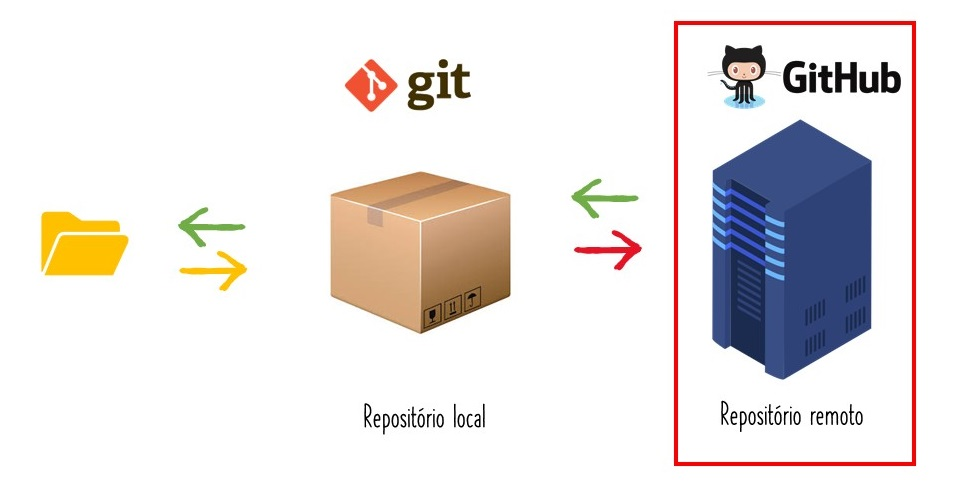
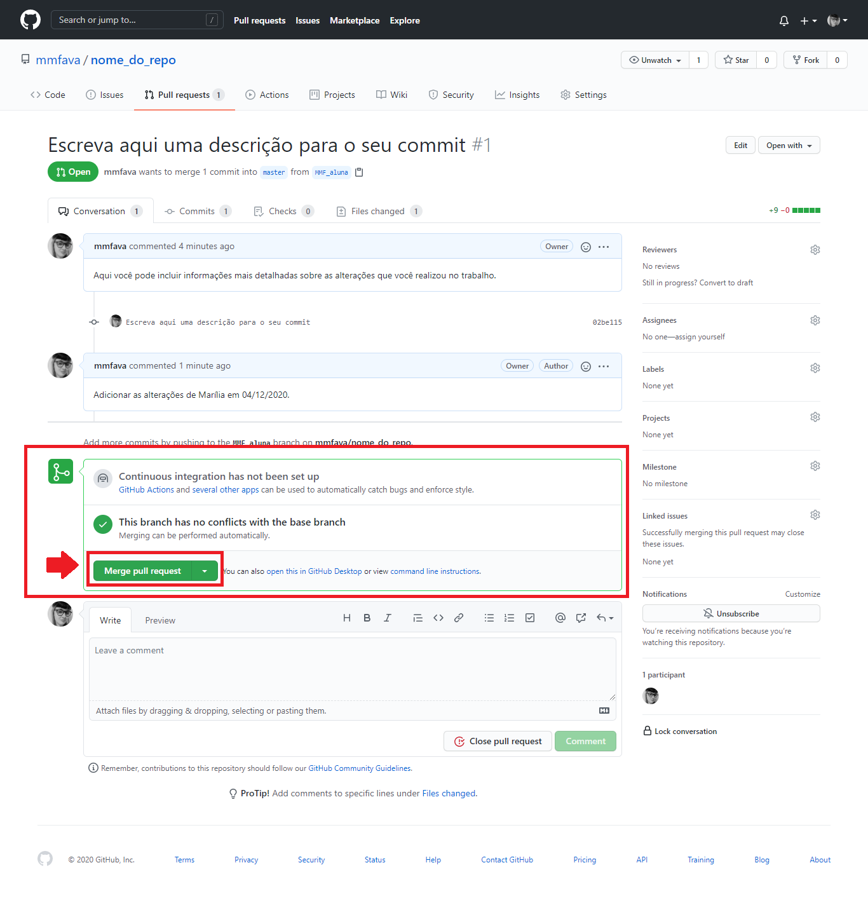
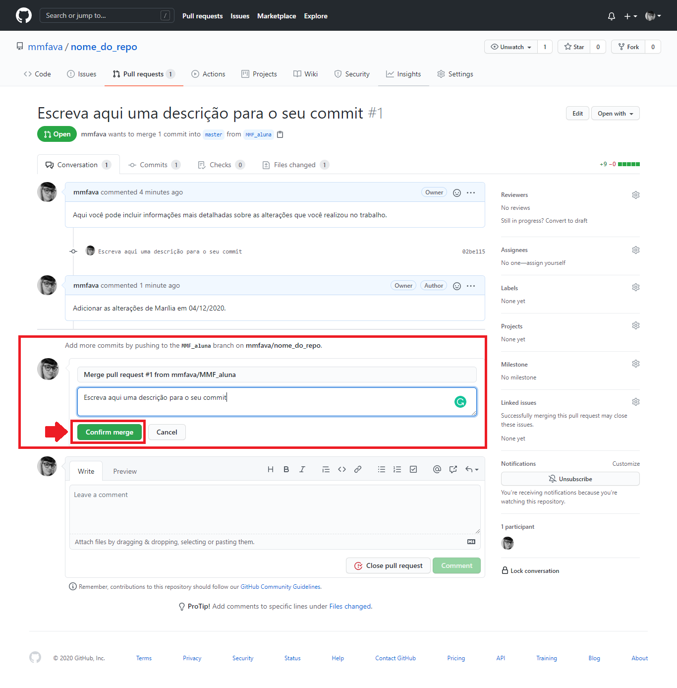
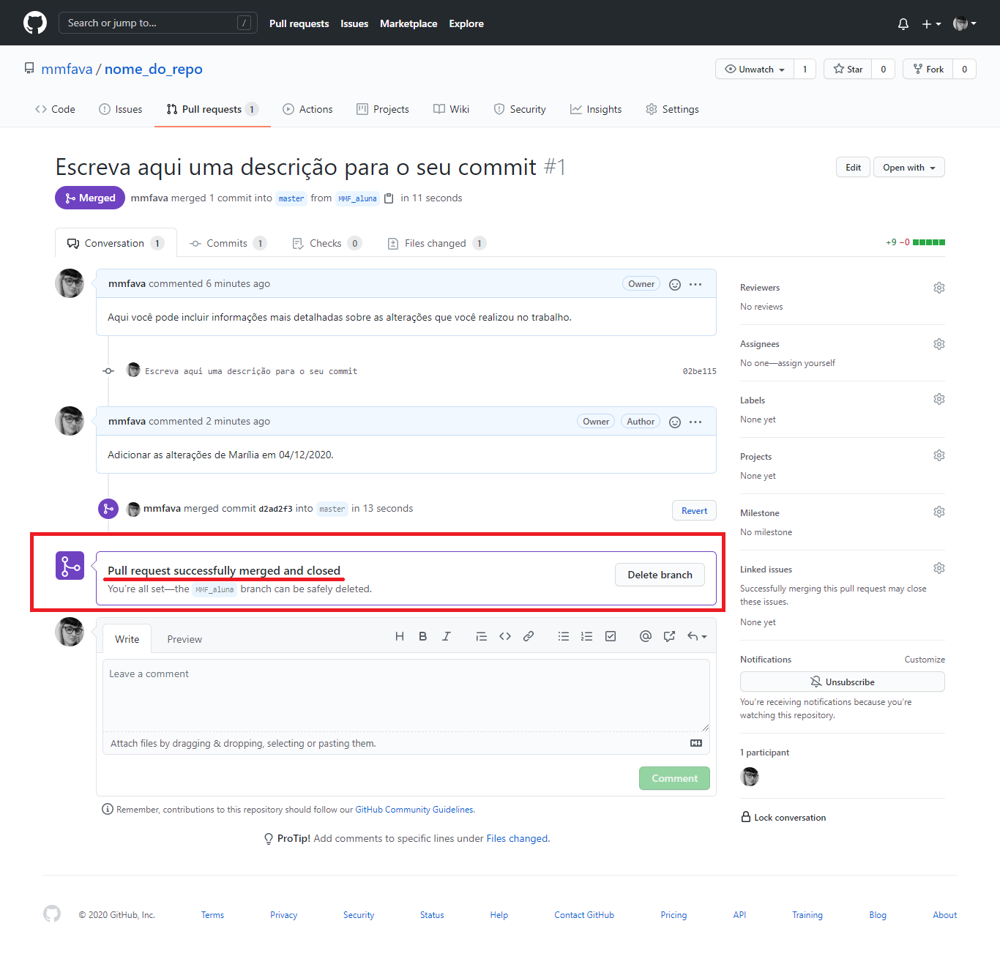
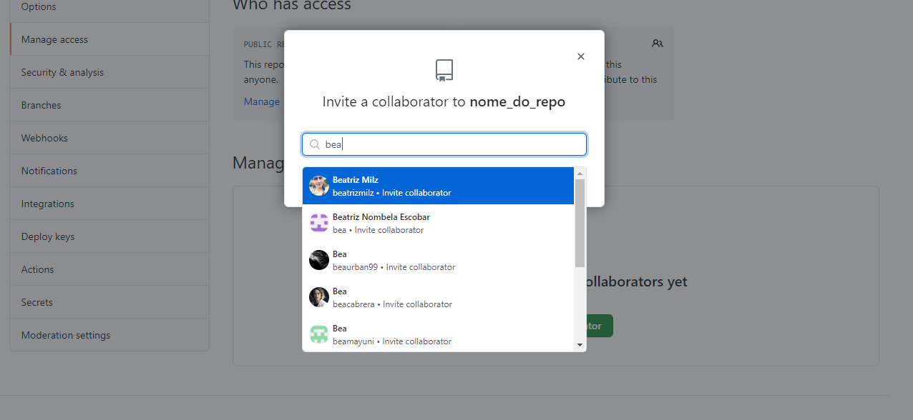

Marília Melo Favalesso
Formação - Bióloga (UFPR - 2015) - Mestre em Ciências Ambientais (UNIOESTE- 2018) - Doutoranda em Ecologia (UBA - Argentina, 2018)
Trabalho com: - Ecoepidemiologia - Análise de dados geoespaciais - Modelagem de nicho
Projetos - GECD (Grupo de Estudos em Ciência de Dados - Foz do Iguaçu)
Contatos
* E-mail: mariliabioufpr@gmail.com
* [Twitter: @mmfbee](https://twitter.com/mmfbee)
* Github: /mmfava
* Site: www.mmfava.com
class: clear background-image: url(figs/Slide2.JPG) background-size: 1000px
class: clear background-image: url(figs/Slide4.JPG) background-size: 1000px
class: clear background-image: url(figs/Slide6.JPG) background-size: 1000px
class: clear background-image: url(figs/Slide8.JPG) background-size: 1000px
class: clear background-image: url(figs/Slide10.JPG) background-size: 1000px
class: clear background-image: url(figs/Slide12.JPG) background-size: 1000px
class: clear background-image: url(figs/Slide14.JPG) background-size: 1000px — class: clear background-image: url(figs/Slide15.JPG) background-size: 1000px
class: clear background-image: url(figs/Slide17.JPG) background-size: 1000px
class: clear background-image: url(figs/Slide19.JPG) background-size: 1000px
class: clear background-image: url(figs/Slide21.JPG) background-size: 1000px
class: clear background-image: url(figs/Slide23.JPG) background-size: 1000px
class: clear background-image: url(figs/Slide25.JPG) background-size: 1000px
class: clear background-image: url(figs/Slide27.JPG) background-size: 1000px
Pré-requisitos
–
- Fazer uma conta no GitHub. Se você é estudande, pode usar o seu e-mail institucional para obter alguns beneficios com o GitHub Student Developer Pack.
–
- Instalar o Git.
–
- Instalar o pacote “usethis”.
install.packages("usethis")## Configurar o Git no PC
.center[
 ] ] |
|---|
| ## Configurar o Git no PC
### Pelo RStudio
- Após instalar todas as aplicações necessárias, nós vamos configurar o Git em nossas máquinas. Esse passo será feito uma única vez! |
| - No RStudio você precisa escrever e executar a seguinte função com o nome e e-mail cadastrado em sua conta GitHub: |
r usethis::use_git_config(user.name = "Fulana de tal", # Seu nome user.email = "fulanadetal@email.com.br") # Seu email |
Configurar o Git no PC
Pelo cmd do Git
Outra possibilidade é executar essa configuração diretamente no Git em sua máquina:

| ## Configurando o GitHub  |
|---|
## Configurando o GitHub
### Token de acesso pessoal (PAT)
- Um PAT é uma alternativa à senha que você usaria ao acessar sua conta GitHub. De forma simplificada, é uma chave semelhante a 48t979e5677b198592e5047da8a79f53bcasb4b10 que dará permissão para o RStudio acessar diretamente o seu GitHub. |
- Cada PAT pode ter uma configuração própria (veremos a seguir).
–
- Para criar o token de acesso, vamos executar o comando que aparece na sequência.
usethis::browse_github_token()- Ao executa-lo, uma página do GitHub irá abrir. Nessa páginá você poderá nomear o seu token e selecionar as permissões que irá conceder a ele.


| ### Token de acesso pessoal (PAT) |
| - Agora vamos incluir o PAT nas configurações do nosso ambiente R. |
- Abra o arquivo
.Renviron:
usethis::edit_r_environ()
# * Modify 'C:/Users/MMF/Documents/.Renviron'
# * Restart R for changes to take effect–
- No arquivo, digite
GITHUBPAT=NUMERO_TOKEN

| - Após escreve-lo, pule uma linha e salve o arquivo. Na sequência, reinicie o RStudio com CTRL + SHIFT + F10. |
|---|
class: center
 |
| Tudo pronto para começarmos a trabalhar com o Git e o Github |
Criar um repositório local pelo RStudio
.center[
]
—
## Criar um repositório local pelo RStudio
- Para criar um repositório local, vamos utilizar a função create_project() do pacote usethis.
–
- Com ela, você precisará fornecer um diretório e o nome do novo repositório em path =.
–
- CUIDADO para não repetir o nome de outros repositórios!
–
usethis::create_project(path = "C:/Users/MMF/Desktop/nome_do_repo2")
# v Creating 'C:/Users/MMF/Desktop/nome_do_repo/'
# v Setting active project to 'C:/Users/MMF/Desktop/nome_do_repo'
# v Creating 'R/'
# v Writing 'nome_do_repo.Rproj'
# v Adding '.Rproj.user' to '.gitignore'
# v Opening 'C:/Users/MMF/Desktop/nome_do_repo/' in new RStudio session
# v Setting active project to 'C:/Users/MMF/Dropbox/GitHub/GECD'| - O RStudio abrirá outra janela com o novo projeto criado. |
|---|
| ## Criar um repositório local pelo RStudio |
.center[
 ] ] |
Criar um repositório local pelo RStudio
- As próximas etapas serão aprender a salvar alterações na linha do tempo do Git (
commit) e envia-las para um repositório remoto (push).
–
- É provável que nessa etapa uma guia chamada “Git” já tenha aparecido na sua IDE. Caso não, a próxima função que vamos utilizar (
use_git()) vai adiciona-la.

| ## Iniciar o repositório local |
| - Aqui vamos trabalhar na janela que o RStudio abriu após criar um novo projeto. |
- Vamos usar a função
use_git()para realizar o nosso primeirocommit(salvar nossos arquivos na linha do tempo) e dar inicio ao nosso repositório.
.center[
 ]
]
- Quando realizamos um
commitna linha do tempo, é importante descrever a mudança que foi realizada no(s) arquivo(s).
–
A função também adiciona arquivos importantes ao
.gitignore.- O .gitignore especifica arquivos intencionalmente não rastreados para ignorar.
–
- Na ausência da guia “Git”, o programa irá pedir para reiniciar o RStudio com a finalidade de adiciona-la.
.center[
 ] ] |
usethis::use_git(message = "Initial commit")
# √ Setting active project to 'C:/Users/MMF/Desktop/nome_do_repo'
# √ Initialising Git repo
# √ Adding '.Rhistory', '.RData' to '.gitignore'
# There are 2 uncommitted files:
# * '.gitignore'
# * '.nome_do_repo.Rproj'
# Is it ok to commit them?
# 1: No way
* # 2: Definitely
# 3: Absolutely not
# Selection: 2
# √ Adding files
# A restart of RStudio is required to activate the Git pane **<--**
# Restart now?
# 1: No way
* # 2: For sure
# 3: Negative
# Selection: 2
# √ Adding files
# √ Commit with message 'Initial commit'| ## Do Git local para o GitHub |
| .center[ ] |
Do Git local para o GitHub
Agora que já criamos um novo projeto no Git e já salvamos os arquivos iniciais criados com um
commit, o nosso próximo passo será criar um repositório associado ao GitHub, adicionando-o ao nosso repo local como uma origem remota, e então fazemos umpushinicial para sincronizar os dois.pushé a palavra em inglês para ‘empurrar’.
–
- Para tal, vamos usar a função
use_github()do pacoteusethis.
usethis::use_github()
# √ Setting active project to 'C:/Users/MMF/Desktop/nome_do_repo'
# √ Checking that current branch is 'master'
# Which git protocol to use? (enter 0 to exit)
# 1: ssh <-- presumes that you have set up ssh keys
*# 2: https <-- choose this if you don't have ssh keys (or don't know if you do)
# Selection: 2
# * Tip: To suppress this menu in future, put
# `options(usethis.protocol = "https")`
# in your script or in a user- or project-level startup file, '.Rprofile'.
# Call `usethis::edit_r_profile()` to open it for editing.
# * Check title and description
# Name: nome_do_repo
# Description:
# Are title and description ok?
# 1: No
# 2: No way
*# 3: For sure
# Selection: 3
# √ Creating GitHub repository
# √ Setting remote 'origin' to 'https://github.com/mmfava/nome_do_repo.git'
# √ Pushing 'master' branch to GitHub and setting remote tracking branch
# √ Opening URL 'https://github.com/mmfava/nome_do_repo'Ela vai abrir o repositório no GitHub.
Criar um arquivo README.md
Arquivo que descreve o conteúdo do seu repositório remoto (repo GitHub).
Utiliza a linguagem Markdown.
- É uma linguagem simples que converte texto em html.
É considerada uma “boa prática” para repos remotos.
usethis::use_readme_md() #somente markdown
# usethis::use_readme_rmd() #rmarkdown - depois salvar apenas como 'md'- Após a execução da função, abrirá um arquivo chamado “README.md”. Faça as alterações que você achar necessário e salve o arquivo.

Subir o README.md no GitHub

## Subir o README.md no GitHub
### Criar uma branch
- O primeiro passo é criar uma branch que irá monitorar as nossas alterações no repositório.
- branches são ramificações de trabalho que permitem edições em paralelo em nosso arquivo, sem alterar o projeto principal (branch master) até o momento que quisermos assim.
- Evitar salvar alterações na branch master.
- Em geral, uma branch de desenvolvimento é uma bifurcação do estado do código que cria um novo caminho para a evolução do mesmo. Elas podem estar relacionadas a distintos tipos de trabalho que compõem o nosso projeto (ex. introdução, métodos, resultados e discussão) ou pessoas (você, orientadora e coorientadora). |
| ```r usethis::pr_init(branch = “MMF_aluna”) |
# √ Checking that local branch ‘master’ has the changes in ‘origin/master’
# √ Creating local PR branch ‘MMF_aluna’
# √ Switching to branch ‘MMF_aluna’
# * Use pr_push() to create PR
``` |
Subir o README.md no GitHub
commit para salvar as alterações no Git local
- Fazer um
commité salvar as alterações que realizamos no projeto na “linha do tempo” do Git. - Os
commitssão acompanhados de uma descrição.
usethis::use_git("Escreva aqui uma descrição para o seu commit")
# There are 1 uncommitted files:
# * 'README.md'
# Is it ok to commit them?
*# 1: Yes
# 2: Nope
# 3: Not now
# selection:
# Enter an item from the menu, or 0 to exit
# Selection: 1
# √ Adding files
# √ Commit with message 'Escreva aqui uma descrição para o seu commit'## Subir o README.md no GitHub
### push para subrir as alterações para o remoto (GitHub) |
- O push atualiza o repositório remoto com quaisquer commits feitos localmente em um branch.
- Ou seja, é o comando que envia as alterações do repositório local (Git) para o remoto (GitHub). |
| ```r usethis::pr_push() |
| # √ Checking that local branch ‘MMF_aluna’ has the changes in ‘origin/MMF_aluna’ # √ Pushing local ‘MMF_aluna’ branch to ‘origin:MMF_aluna’ # √ Create PR at link given below *# √ Opening URL ‘https://github.com/mmfava/nome_do_repo/compare/MMF_aluna’ ``` |
- A página do GitHub será aberta para terminar o Pull Request. |






| ## Convidar um colaborar para o projeto GitHub - Caso você esteja desenvolvendo um projeto que contará com a contribuição de outres, você poderá adiciona-los ao seu repositório GitHub. |
- No seu repo, vá em Settings > Manage access > invite a collaborator.
- Escreve o nome do colaborador/a (como aparece no GitHub ou a *@* dele/a). |
|  |
Finalizar a branch criada
- Após realizar todas as alterações necessárias no projeto, você poderá fuzionar a sua
branch(= MMF_aluna) com abranch mastere encerrar a atividade dela no projeto.
usethis::pr_finish()
# √ Checking that remote branch 'origin/MMF_aluna' has the changes in 'local/MMF_aluna'
# √ Switching back to 'master' branch
# √ Pulling changes from GitHub source repo 'origin/master'
# √ Deleting local 'MMF_aluna' branch- “TCC pronto para a entrega?”
## Do GitHub para o Git local
.center[
 ] ] |
|---|
## Do GitHub para o Git local
.center[
 ] ] |
Do GitHub para o Git local
clonar um repósitorio remoto
Clonarum repositório = criar uma cópia local (no PC) de um projeto que já existe remotamente.
–
- O
cloneinclui todos os arquivos, histórico ebranchesdo projeto.
–
- Ao
clonarum repositório, as alterações que você realizar não entrarão no projeto principal se não for sequênciada de umforkou estiver associada por umbranch.
–
.center[
 ]
]
## Do GitHub para o Git local
### clonar um repósitorio remoto |
| ```r usethis::create_from_github(repo_spec = “beatrizmilz/RLadies-Git-RStudio-2019”, destdir = “C:/Users/MMF/Desktop”, fork = FALSE) # clonar, mas sem o fork! |
| # Which git protocol to use? (enter 0 to exit) |
| # 1: ssh <– presumes that you have set up ssh keys * # 2: https <– choose this if you don’t have ssh keys (or don’t know if you do) |
| # Selection: 2 |
# * Tip: To suppress this menu in future, put
# options(usethis.protocol = "https")
# in your script or in a user- or project-level startup file, ‘.Rprofile’.
# Call usethis::edit_r_profile() to open it for editing.
# v Cloning repo from ‘https://github.com/beatrizmilz/RLadies-Git-RStudio-2019.git’ into
# ‘C:/Users/MMF/Desktop/RLadies-Git-RStudio-2019’
# v Setting active project to ‘C:/Users/MMF/Desktop/RLadies-Git-RStudio-2019’
# v Opening ‘C:/Users/MMF/Desktop/RLadies-Git-RStudio-2019/’ in new RStudio session
``` |
Do GitHub para o Git local
clonar com um fork
Uma bifurcação ou ramificação (em inglês:
fork) é uma cópia de um repositório remoto (GitHub) na sua máquina local com uma “ponte” para o projeto original.Séria
clonarum projeto na sua máquina, realizar as alterações no projeto finalizado com umpull request. O responsável pelo repositório pode ou não aceitar as suas modificações.Se você você fizer um
forkcom algum projeto, irá notar uma barra informando quantoscommitsa suabranchestá atrás ou na frente do projeto inicial.
.center[
 ]
]
## Do GitHub para o Git local
### clonar com um fork |
| ```r usethis::create_from_github(repo_spec = “beatrizmilz/RLadies-Git-RStudio-2019”, destdir = “C:/Users/MMF/Desktop”, fork = TRUE) |
| # v Creating ‘C:/Users/MMF/Desktop/RLadies-Git-RStudio-2019/’ # v Forking ‘beatrizmilz/RLadies-Git-RStudio-2019’ # v Cloning repo from ‘https://github.com/mmfava/RLadies-Git-RStudio-2019.git’ into # # ‘C:/Users/MMF/Desktop/RLadies-Git-RStudio-2019’ # v Setting active project to ‘C:/Users/MMF/Desktop/RLadies-Git-RStudio-2019’ # v Adding ‘upstream’ remote: ‘https://github.com/beatrizmilz/RLadies-Git-RStudio-2019.git’ # v Pulling changes from GitHub source repo ‘upstream/master’ # v Setting remote tracking branch for local ‘master’ branch to ‘upstream/master’ # v Opening ‘C:/Users/MMF/Desktop/RLadies-Git-RStudio-2019/’ in new RStudio session # v Setting active project to ‘C:/Users/MMF/Dropbox/GitHub/GECD’ ``` |
Do GitHub para o Git local
Atualizar o repositório local (pull)
- O
pullé a palavra em inglês para puxar.
–
- O
pullatualiza a linha local de desenvolvimento com as alterações da contraparte remota.
–
- Nós usamos esse comando se um colega de equipe fez um
pull requestno GitHub, deixando a nossabranchatrasada em relação ao projeto no repo remoto.
–
- Em outras palavras, é atualizar o nosso Git local para as mudanças realizadas no remoto.
usethis::pr_pull()
# √ Pulling changes from GitHub PR| ## Do GitHub para o Git local |
.center[
Pronto! agora é só trabalhar 😸  ] ] |
class: inverse, center, middle
Interface do Git no RStudio
Trabalhando com ‘cliques’
.center[
 ]
]
| class: inverse, center, middle |
.center[
 ] ] |
Interface do Git no RStudio
- Para os que preferem ‘cliques’ a programação, o RStudio oferece a opção “Git Pane” para trabalhar direto da IDE.
- O “Git Paine” só aparece em projetos versionados com o Git.
.center[
 ]
]
Original: Cheatsheets RStudio 2019
Interface do Git no RStudio
commit
.center[
 ]
]
## Interface do Git no RStudio
### history |
.center[
 ] ] |
Criar um repositório diretamente no GitHub
Acesse a sua conta GitHub e acesse a opção “new” na guia “repositories” (1a).
Na página que aparecerá na sequência, incluir um nome para o seu repositório (2b), uma descrição (2c), determinar se o seu repositório será público ou privado (2d) e peça para o GitHub adicionar um arquivo para a descrição do seu repositório (README.md) (2e).

| ## Interface do Git no RStudio ### Clonar o repositório remoto com interface do RStudio |
- Agora que você já criou um repositório no GitHub, é necessário clona-lo para usar no seu RStudio. Para tal, você precisa abrir o RStudio e acessar File > New Project. |
| - Na aba Create Project, selecionar a opção Version Control e, na sequência, em Create Project from Version Control eleger a opção Git. |
 |
Interface do Git no RStudio
Clonar o repositório remoto com interface do RStudio
- Na guia Clone Git Repository, você precisara preencher os dados do repositório que você quer clonar.
- Copiar a URL do repositório GitHub (1a e 1b)
- Inserir a URL no campo Repository URL (2a)
- Escolher o nome do repositório (2b)
- Escolha um diretório para o seu projeto (uma pasta no seu computador) para manter a cópia local (2c)

- O RStudio irá fazer o clone do repositório e abrirá um RProj para ele (caso não exista um ainda, será criado).
| ## Referências |
| - Beatriz Milz. Primeiros passos utilizando o Git e o GitHub no RStudio. |
| - Curso-R. Rstudio e GitHub no dia-a-dia. |
| - TreinaWeb. Github: Pare com as senhas e utilize Tokens de Acesso. |
| .center[ “Nessa vida nada se cria, tudo se transforma ou se copia”.] |
class: center, middle
Agradecimentos

Vamos praticar? 💻
Instale todas as ferramentas necessárias para tabalhar com o Git no RStudio.
Faça a configuração do seu token GitHub.
Crie um repostório local pelo RStudio, para testar.
Suba o seu repositório para o GitHub.
Crie um arquivo “README.md” para o seu repositório e adicione uma descrição.
Clone o repositório “nome_do_repo” na sua máquina com um
fork.Inclua o seu nome na listade participantes na descrição do Curso de Git & GitHub do GECD. Tente fazer diretamente pelo GitHub.
- Você pode fazer a atividade por linha de comando ou pelo Git pane, você decide! 👈